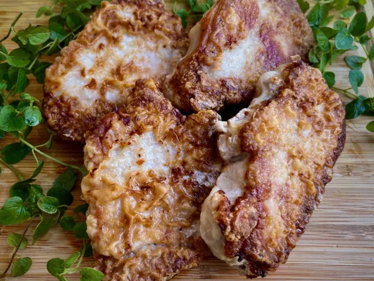

Pan Fried Pork Chops

Description
Few things are as easy to prepare as these pan-fried boneless pork chops.
They take only minutes to prepare!
--Ingredients--
- 4 boneless pork chops, 3/4-inch thick
- salt and freshly ground black pepper to taste
- 2 tablespoons all-purpose flour
- 1/2 cup cooking oil
--Steps--
- Do not pat chops dry, so seasonings and flour will stick.
- Season both sides of pork chops with salt and pepper, then sprinkle with flour on both sides.
Use the back of a spoon to distribute the flour over the entire surface.
- Heat oil in a 12-inch non-stick skillet over medium heat until it shimmers.
Carefully add pork chops and pan fry until brown, about 4 minutes. Do not disturb the chops until ready to turn.
- When you see the edges of the chops turn brown, turn, and pan fry the other side until no longer pink on the inside and brown on the outside,
an additional 4 minutes. An instant-read thermometer inserted into the center should read 145 degrees F (63 degrees C).
Reduce heat, if they are browning too quickly. Serve warm.